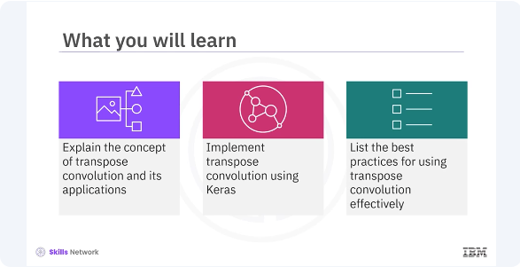
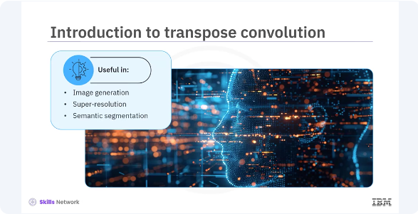
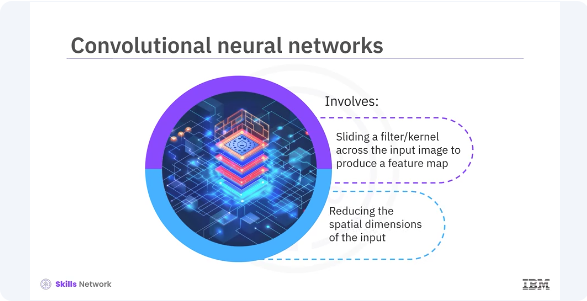
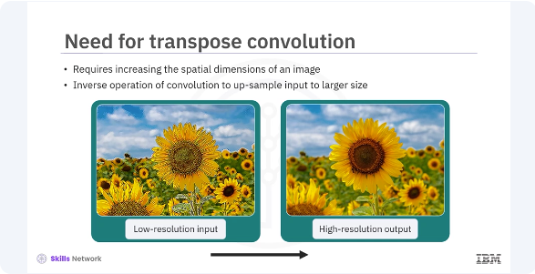
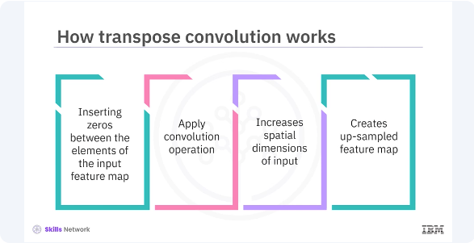
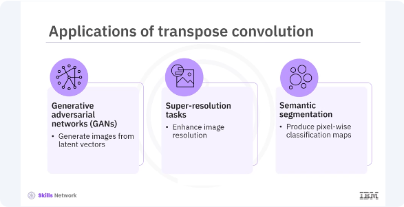
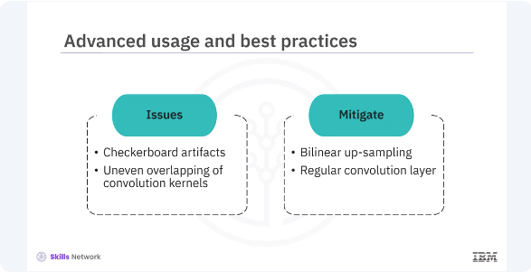

Introducing Transpose Convolution

Welcome to this video on transpose convolution. After watching this video, you'll be able to explain the concept of transpose convolution and its applications, implement transpose convolution using Keras, list the best practices for using transpose convolution effectively.

Transpose convolution is an essential technique in deep learning for image processing tasks. Also known as deconvolution, transpose convolution is particularly useful in applications such as image generation, super-resolution, and semantic segmentation. To understand transpose convolution, let's briefly revisit standard convolution.

In convolution neural networks (CNNs), a convolution operation involves sliding a filter or kernel across the input image to produce a feature map. This process reduces the spatial dimensions of the input, which is useful for extracting features, but not for tasks requiring up-sampling.

Certain tasks, such as generating higher-resolution images from low-resolution inputs, require increasing the spatial dimensions of an image. Transpose convolution addresses this need by performing the inverse operation of convolution, effectively up-sampling the input to a larger size.

Transpose convolution works by inserting zeros between elements of the input feature map and then applying the convolution operation. This process increases the spatial dimensions of the input, creating an up-sampled feature map that retains the characteristics of the original input, but at a higher resolution.

Transpose convolutions are crucial in various applications. In generative adversarial networks, GANs, they generate images from latent vectors. In super-resolution tasks, they enhance image resolution. Additionally, they produce pixel-wise classification maps and semantic segmentation by up-sampling intermediate feature maps.
pyenv activate venv3.10.4
import os
import logging
import tensorflow as tf
from tensorflow.keras.models import Model
from tensorflow.keras.layers import Input, Conv2DTranspose
# Set environment variables to suppress TensorFlow warnings
os.environ['TF_CPP_MIN_LOG_LEVEL'] = '3' # Ignore INFO, WARNING, and ERROR messages
os.environ['TF_ENABLE_ONEDNN_OPTS'] = '0' # Turn off oneDNN custom operations
# Use logging to suppress TensorFlow warnings
logging.getLogger('tensorflow').setLevel(logging.ERROR)
# Define the input layer
input_layer = Input(shape=(28, 28, 1))
# Add a transpose convolution layer
transpose_conv_layer = Conv2DTranspose(
filters=32,
kernel_size=(3, 3),
strides=(2, 2),
padding='same',
activation='relu'
)(input_layer)
# Define the output layer
output_layer = Conv2DTranspose(
filters=1,
kernel_size=(3, 3),
activation='sigmoid',
padding='same'
)(transpose_conv_layer)
# Create the model
model = Model(inputs=input_layer, outputs=output_layer)
# Compile the model
model.compile(
optimizer='adam',
loss='mean_squared_error',
metrics=['accuracy']
)
# Display the model summary
model.summary()
Let's implement transpose convolution in Keras. You will create a simple model with an input layer, a transpose convolution layer, and an output layer. This code creates a transpose convolution layer with 32 filters, a three-by-three kernel, strides of two, and relu activation. This code creates the output layer of one filter and a sigmoid activation. This code creates a Keras model that connects the input and output layers through a transpose convolution layer. This code compiles the model with the Adam optimizer and mean squared error loss.

While using transpose convolution, be aware of potential issues such as checkerboard artifacts, which can occur due to uneven overlapping of the convolution kernels. To mitigate this, consider using additional techniques like blinear up-sampling followed by a regular convolution layer.
import os
import logging
import tensorflow as tf
from tensorflow.keras.models import Sequential, Model
from tensorflow.keras.layers import Input, UpSampling2D, Conv2D
# Set environment variables to suppress TensorFlow warnings
os.environ['TF_CPP_MIN_LOG_LEVEL'] = '3' # Ignore INFO, WARNING, and ERROR messages
os.environ['TF_ENABLE_ONEDNN_OPTS'] = '0' # Turn off oneDNN custom operations
# Use logging to suppress TensorFlow warnings
logging.getLogger('tensorflow').setLevel(logging.ERROR)
# Define the input layer
input_layer = Input(shape=(28, 28, 1))
# Define a model with up-sampling followed by convolution to avoid checkerboard artifacts
x = UpSampling2D(size=(2, 2))(input_layer)
output_layer = Conv2D(
filters=64,
kernel_size=(3, 3),
padding='same'
)(x)
# Create the model
model = Model(inputs=input_layer, outputs=output_layer)
# Compile the model
model.compile(
optimizer='adam',
loss='mean_squared_error',
metrics=['accuracy']
)
# Display the model summary
model.summary()
Let's see an example where you can reduce the artifacts and improve the quality of the up-sampled images. In this example, up-sampling 2D performs up-sampling by a factor of two. This code applies a convolution layer to refine the up-sampled output.
In this video, you learned transpose convolution is useful in image generation, super-resolution, and semantic segmentation applications. It performs the inverse operation of convolution, effectively up-sampling the input image to a larger size of higher resolution. It works by inserting zeros between elements of the input feature map and then applying the convolution operation.